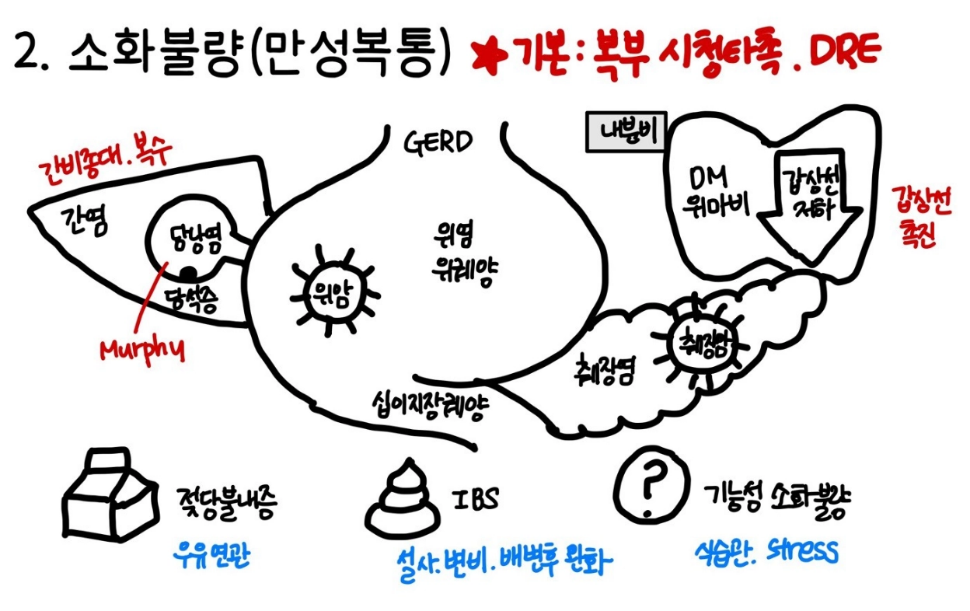

27. 만성복통, 소화불량
| 의심질환 | 동반증상 |
식도, 위 | 위식도역류질환(GERD) | 가슴 쓰림(속 쓰림), 타는 듯한 통증, 눕거나/식후 악화, 위산 역류(신물이 올라옴), 만성 기침, 목의 이물감 |
| 위염, 소화성 궤양(PUD) | 명치 통증, 흑색변(출혈 시), 식사 시 통증 변화(식후 – 위, 공복 – 십이지장) |
| 기능성/일차성 소화불량 | 상복부 통증, 식후 팽만감/조기 포만감, 내시경 상 정상 |
| 당뇨병성 위 마비 | 조기포만감, 소화불량, 더부룩함, 오심, 구토 |
| 위암 | 체중감소, 식욕부진, 흑색변 |
간담췌 | 간암/만성 간염 | 전신 쇠약/피로/근육통, 황달/짙은 소변, 복수, 간비대(오른쪽 윗배에 만져지는 덩어리) |
| 담석증/만성 담낭염 | 우측 어깨/등 방사통, 오심, 구토, 지방식 후 통증 |
| 담관암 | 진행성 황달/짙은 소변/밝은 대변 |
| 췌장암/만성 췌장염 | 황달, 복부-명치 사이 통증, 등 뒤로 뚫고 나가는 듯한 방사통, 구부리거나/숙이면 완화, 지방변, 체중 감소, 갑자기 생긴 당뇨 |
대장 | 과민성 장 증후군(IBS) | 뒤틀리는 듯한 만성 복통, 배변 후 통증 호전, 복부 팽만감, 설사/변비 교대 |
| 염증성 장질환(IBD) | 혈변, 만성 설사, 발열, 점막 궤양, 체중 감소 |
| 대장암 | 배변 습관의 급격한 변화, 변이 가늘어짐, 빈혈, 체중 감소 |
| 젖당불내증 | 우유 섭취 후 속 불편/복통/설사 |

평가목표 1) 기능적 원인과 기질적 원인을 감별하기 위한 병력청취와 신체진찰을 시행할 수 있는지 | ||||||||||||||||||||||||||||||||||||||||||||||||||||||||||||
기능적 원인 | 기능성 소화불량 당뇨병성 위 마비 과민대장증후군(IBS) 젖당불내증(lactulose intolerance) | |||||||||||||||||||||||||||||||||||||||||||||||||||||||||||
기질적 원인 | 식도: 역류성 식도염 위: 만성 위염, 위/십이지장 궤양, 위암 간담췌: 만성 간/담/췌장염 대장: 염증성 장질환(IBD), 대장암 | |||||||||||||||||||||||||||||||||||||||||||||||||||||||||||
구체적인 성과 | ||||||||||||||||||||||||||||||||||||||||||||||||||||||||||||
병력 청취
| 소화불량/만성복통(기간, 위치 등) 평가 | 기간: 3개월 이상 | ||||||||||||||||||||||||||||||||||||||||||||||||||||||||||
|
| 위치: - RUQ: 간염, 담낭염, 담관염, 췌장염 - Epigastric: 식도염, 역류성 식도염, 위염, 위/십이지장 궤양, 췌장염 - LUQ > 비장염, 위염, 위궤양, 췌장염 - RLQ > 충수돌기염, 막창자염, 곁주머니염, 염증성장질환, 산부인과질환(난관염, 자궁외임신), 비뇨기과질환(신우신염, 요로결석) - Periumbilical > 초기 충수돌기염, 위장관염 - LLQ > 곁주머니염, 염증성장질환, 과민대장증후군, 산부인과질환(난관염, 자궁외임신), 비뇨기과질환(신우신염, 요로결석) - Whole > 기능성 복통, 위장관염, 장폐색, 과민대장증후군, 당뇨병성 위 마비 | ||||||||||||||||||||||||||||||||||||||||||||||||||||||||||
|
| 양상: - 타는 듯한 통증 > 역류성 식도염 - 쥐어짜는 듯한 통증 > 담석증, 요로결석 - 은근한 명치 통증 > 소화성 궤양 - 둔하고 지속적인 통증 > 만성 췌장염, 암 - 배변 후 호전되는 통증 > 과민대장증후군 | ||||||||||||||||||||||||||||||||||||||||||||||||||||||||||
|
| 정도: - NRS: 0-10 - QoL: 일상생활 지장 정도 | ||||||||||||||||||||||||||||||||||||||||||||||||||||||||||
| 기질적 원인에 의한 소화불량/만성복통 감별 | Red flag signs: 기질적 원인에 의한 증상임을 의심 > 위/대장내시경 시행 필요 - 고령의 환자에서 처음 증상 호소 > 암 검진 필요 - 야간 통증 > 기능성에서는 대개 잠잘 땐 아프지 않음 - 진행하는 증상, 새로운 증상 발생 - 체중감소, 발열, 혈변/흑색변, 심한 탈수 - 염증성 장질환(CD, UC), 악성 질환의 가족력 - 48시간 금식 이후 설사 지속 - Lab : ESR +, CRP +, HypoK, Anemia - Stool : 지방, 피, 고름, 대변량 > 200mL/d | ||||||||||||||||||||||||||||||||||||||||||||||||||||||||||
| 의심되는 원인질환에 따른 동반증상, 위험요인 확인 |
| ||||||||||||||||||||||||||||||||||||||||||||||||||||||||||
| 환자가 수치심을 느끼지 않도록 배려 | 복부 증상을 정확히 파악하기 위해서는 실례지만 배변 습관에 대해서도 몇 가지 여쭤봐야 합니다. 진료를 위해 꼭 필요한 질문이니 편하게 말씀해 주셔도 됩니다. 이런 증상은 장 건강을 체크할 때 가장 먼저 확인하는 아주 일반적인 지표입니다. | ||||||||||||||||||||||||||||||||||||||||||||||||||||||||||
신체 진찰 | 의심되는 원인질환에 따른 신체진찰 | 기본 신체 진찰 | VS 확인 눈(빈혈, 황달) 입(탈수), 목(림프절), 피부(탈수) | |||||||||||||||||||||||||||||||||||||||||||||||||||||||||
|
| 복부 진찰 | 시 – 청 – 타 – 촉 간비대, 비장비대, 복수 | |||||||||||||||||||||||||||||||||||||||||||||||||||||||||
|
| 특이 검사 | 대장 병변 의심 > DRE 산부인과 질환 의심 > 골반 진찰 비뇨기과 질환 의심 > CVAT | |||||||||||||||||||||||||||||||||||||||||||||||||||||||||
| 환자가 수치심을 느끼지 않도록 배려 | 환자 수치스럽지 않게 (진찰 동의, 설명, 불필요한 곳 가려주기) | ||||||||||||||||||||||||||||||||||||||||||||||||||||||||||
진단 및 치료 | 기질적인 원인을 감별하는 진단계획 수립 | 기본 검사 | 혈액검사 | 빈혈 소화 효소, 간 수치, 전해질 | ||||||||||||||||||||||||||||||||||||||||||||||||||||||||
|
|
| 영상검사 | 식도, 위 > 위내시경 간담췌 > 복부 초음파, 복부 CT 대장 > 대장내시경 | ||||||||||||||||||||||||||||||||||||||||||||||||||||||||
|
| 특이 검사 | 위 | 요소날숨검사/신속요소분해검사, 24시간 식도 pH 검사 | ||||||||||||||||||||||||||||||||||||||||||||||||||||||||
|
|
| 간 | 바이러스 항체검사 | ||||||||||||||||||||||||||||||||||||||||||||||||||||||||
|
|
| 대장 | 대변 잠혈 검사 | ||||||||||||||||||||||||||||||||||||||||||||||||||||||||
| 가능성 높은 질환의 치료 계획 수립 | 위식도역류질환, 위염, 소화성궤양 | 양성자펌프억제제 + 제산제 H.pylori 제균 치료(3제 : 양성자펌프억제제+Amoxicillin+Clarthromycin 4제 : 양성자펌프억제제+Bismuth+Metronidazole+Tetracycline) 수술/내시경적 점막하절제술 + 항암 | |||||||||||||||||||||||||||||||||||||||||||||||||||||||||
|
| 담석증, 만성 담낭암, 담관암 | 금식 유지, 항생제, 수액 담낭 제거 수술, 내시경역행담췌조영술(ERCP) | |||||||||||||||||||||||||||||||||||||||||||||||||||||||||
|
| 만성 췌장염, 췌장암 | 금식 유지, 췌장효소보충, 혈당 조절 | |||||||||||||||||||||||||||||||||||||||||||||||||||||||||
|
| 만성 간염, 간암 | 항바이러스제, 보존적 치료 | |||||||||||||||||||||||||||||||||||||||||||||||||||||||||
|
| 기능성 소화불량 | 심리적 안정 궤양형: 양성자펌프억제제 운동장애형: 운동촉진약물 | |||||||||||||||||||||||||||||||||||||||||||||||||||||||||
|
| 과민대장증후군 | 심리적 안정, 적당한 운동과 휴식, 진경제, 완화제 | |||||||||||||||||||||||||||||||||||||||||||||||||||||||||
|
| 당뇨성 마비 | 운동촉진약물, 당뇨 조절 | |||||||||||||||||||||||||||||||||||||||||||||||||||||||||
|
| 젖당불내증 | 유당 회피 | |||||||||||||||||||||||||||||||||||||||||||||||||||||||||
|
| 염증성 장질환 | 면역조절제, 스테로이드 | |||||||||||||||||||||||||||||||||||||||||||||||||||||||||
|
| 대장암 | 수술 (내시경 점막 박리/ 암절제술), 항암치료 | |||||||||||||||||||||||||||||||||||||||||||||||||||||||||
환자 교육 | 기능성 장애의 관리 방법 설명 | 생활습관 개선 | 식사 규칙적으로 먹기, 맵고 자극적인 음식 피하기, 야식 피하기 과일과 채소 등 지방은 적고 섬유질이 많은 음식 많이 먹기 금연 금주 커피/탄산음료 줄이기 음식 충분히 씹어 삼키기, 과식하지 않기 적절한 유산소 운동과 체중 조절 당뇨 조절 적당한 휴식/수면, 스트레스 관리 진통제 등 약물 사용 전 의사와 상담 (과민대장증후군에서 고식이섬유 식사 강조) | |||||||||||||||||||||||||||||||||||||||||||||||||||||||||
|
| 추가적 검사 설명 | 음식 심키기 어려움/어지러움/객혈/혈변/흑색변 즉시 내원 필요 기질적 문제가 의심되는 경우 복부 CT 등 추가 검사 필요할 수 있음 | |||||||||||||||||||||||||||||||||||||||||||||||||||||||||
| 환자가 수치심을 느끼지 않도록 배려 | 환자분이 겪으시는 증상은 현대인들이 아주 흔하게 겪는 질환 중 하나이며, 환자분이 예민해서 생긴 잘못이 아닙니다. 장이 남들보다 조금 더 민감하게 반응하는 상태라고 이해하시면 됩니다. | ||||||||||||||||||||||||||||||||||||||||||||||||||||||||||
질환 | 질환 설명 | 병력청취 | 신체진찰 | 검사 | 치료 |
위식도역류 | 위산이 식도로 역류 위산 : 소화 과정 중 음식을 녹이는 자극적인 산성 물질 | 가슴 쓰림(속 쓰림), 타는 듯한 통증, 눕거나/식후 악화, 위산 역류(신물이 올라옴), 만성 기침, 목의 이물감 | Epigastric pain | 위내시경, 24hr 식도 산도 검사 | 양성자펌프억제제/제산제, 생활습관 교정 |
위염 /위궤양 /십이지장궤양 | 위 점막에 염증 궤양 : 깊게패임 | 명치 통증, 흑색변(출혈 시), 식사 시 통증 변화(식후 – 위, 공복 – 십이지장) | Epigastric pain/LUQ pain/ Periumbilical pain/Whole abd pain | 위내시경 | 양성자펌프억제제/제산제, 생활습관 교정 |
위암 | 위에 종양 음식이 잘 안 내려감, 더부룩 | 체중감소, 식욕부진, 흑색변 | Epigastric pain 복부 종괴 촉진 좌측 쇄골상 림프절 비대 | 위내시경, 복부 CT/MRI | 수술 (내시경 점막 박리/위절제술), 항암치료 |
담석증/ 만성 담낭염/담낭암 | 담낭에 돌 담즙 분비감소 담즙 : 지방 소화를 도움 | 우측 어깨/등 방사통, 오심, 구토, 지방식 후 통증 암 : 진행성 황달/짙은 소변/밝은 대변 | RUQ pain 황달 Murphy sign + | 간기능검사, 상복부 초음파 | 내시경역행담췌조영술(ERCP), 담낭절제술 |
만성 췌장염/췌장암 | 췌장이 망가짐 소화 효소 분비가 부족 소화효소 생성해 소화시키고 인슐린 같은 호르몬으로 혈당 조절하는 기능 감소 | 황달, 복부-명치 사이 통증, 등 뒤로 뚫고 나가는 듯한 방사통, 구부리거나/숙이면 완화, 지방변, 체중 감소, 갑자기 생긴 당뇨 | RUQ pain/Epigastric pain/LUQ pain 황달 Courvoisier’s sign + | 췌장효소 검사, 복부 CT | 췌장효소 보충, 생활습관 교정(식이조절, 금주/금연) |
간암/만성 간염 | 간 기능 저하 담즙 감소 | 전신 쇠약/피로/근육통, 황달/짙은 소변, 복수, 간비대(오른쪽 윗배에 만져지는 덩어리) | RUQ pain 복수 +, 간비대 + 황달, 거미혈관종 | 간기능검사, HBs Ag, anti-HCV | 보존적 치료, 항바이러스제 |
과민대장증후군 | 장이 예민해서 스트레스나 음식 등에 따라 복통,설사, 변비가 반복 | 뒤틀리는 듯한 만성 복통, 배변 후 통증 호전, 복부 팽만감, 설사/변비 교대 | LLQ pain/ Whole abd pain Td/RTd +/- | 기질성 r/o을 위해 대장내시경 | 심리적 안정, 생활습관 교정 (식이조절, 금주/금연, 운동) |
젖당불내성 | 우유/유제품 ‘젖당’ 잘 소화X 복통+가스 참+설사 | 우유 섭취 후 속 불편/복통/설사 | Whole abd pain 장음 항진 | 기질성 r/o을 위해 대장내시경 수소날숨검사, 젖당부하검사 | 유당 회피 |
기능성 소화불량 | 특별한 병은 없음 위가 더부룩하고 빨리 배부름 소화가 잘 안 되는 상태 | 상복부 통증, 식후 팽만감/조기 포만감, 내시경 상 정상 | Whole abd pain | 기질성 r/o을 위해 위내시경 | 심리적 안정, 생활습관 교정 (식이조절, 금주/금연, 운동) |
당뇨병성 위 마비 | 당뇨병을 오래 앓거나 혈당 관리가 잘 안 되면, 높은 혈당이 위장을 움직이는 신경(미주신경)을 손상시캄 | 조기포만감, 소화불량, 더부룩함, 오심, 구토 | Whole abd pain | 기질성 r/o을 위해 위내시경 혈당검사 | 혈당조절 |
염증성 장질환 | 우리 몸의 면역 체계가 장 점막을 외부 물질로 착각해서 과하게 반응하여 생기는 현상 | 혈변, 만성 설사, 발열, 점막 궤양, 체중 감소 | RLQ pain/LLQ pain 항문 주위 병변 | 대장내시경, 대변 잠혈 검사 | 면역조절제, 스테로이드 |
대장암 | 위에 종양 음식이 잘 안 내려감, 더부룩 | 배변 습관의 급격한 변화, 변이 가늘어짐, 빈혈, 체중 감소 | RLQ pain/LLQ pain DRE 상 덩이 촉진 | 대장내시경, 복부 CT/MRI | 수술 (내시경 점막 박리/ 암절제술), 항암치료 |
자기소개/환자확인/환자동의/활력징후 “진료 대기 시간이 길었는데 오래 기다리시느라 고생 많으셨습니다./몸도 좋지 않은데 병원까지 오셔서 기다리시느라 고생이 많으셨습니다.” “복부 증상을 정확히 파악하기 위해서는 실례지만 배변 습관에 대해서도 몇 가지 여쭤봐야 합니다. 진료를 위해 꼭 필요한 질문이니 편하게 말씀해 주시면 많은 도움이 될 것입니다.” | ||
O | 언제부터 갑자기/서서히 하루 중 언제 | |
L | 어디가 아픈지/”아픈데 손으로 짚어보세요.” 다른 곳으로 이동하는지/뻗치는지 | |
D | 지속/있다없다 얼마나 자주 | |
Co | 악화 | |
Ex | 이전에도? 🡪 치료, 제산제 효과 | |
C | 개방형: “어떻게 아픈지 자세히 설명해주시겠어요?” 양상: 타는듯/쑤시는듯찌르는듯/더부룩묵직/가스참/쥐어짜는듯 얼마나 심한지: NRS, QoL 🡪 “많이 힘드셨겠습니다.” | |
A | 개방형: “다른 불편한 곳은 없으세요? 네. 그럼 제가 몇가지 자세하게 확인해보겠습니다.” | |
| 전신 | F/C/Fatigue/WL/피로/식욕부진/부종 |
| 소화기 | 식욕저하/구역/구토/연하곤란 “대변, 소변은 좀 어떠세요? 색/양/횟수/특이사항?” 🡪 변비/설사/혈변/흑색변/지방변/색 변화/ → 굵기 변화/뒤무직/배변습관 변화 복부팽만/복부종괴/황달 🡪 황달 있는 경우 가려움/복수/소변대변 색변화 |
| GERD | 속쓰림/기침/신물 올라옴 |
F | 개방형: “증상이 어떨 때 좀 괜찮아지고/심해지나요?” | |
| 식사 | 전 > 십이지장 궤양 후 > 위염, 위 궤양 기름진 식사 > 담도계, 췌장 음주 > 위염, 위 궤양, 췌장 우유 > 젖당불내증 |
| 자세 | 앞으로 숙이면 완화 > 췌장염 누우면 악화 > 위식도역류질환 |
| 대변 | 변을 보고 난 후 완화 > 과민대장증후군 |
| 스트레스 | 스트레스를 받으면 악화 > 기능성 소화불량, 과민대장증후군 |
E | 건강검진, 위내시경/대장내시경 예방접종: 간염 | |
요약 및 PPI | “지금까지 말씀하신 것을 요약하자면 ~.” “제가 질문을 많이 했는데 잘 대답해주셔서 감사합니다. 몇가지만 더 여쭙도록 하겠습니다.” | |
외 | 수술/외상/입원 | |
과 | HTN/DM/고지혈증/결핵/간 DM | |
약 | 약물/영양제/한약 소염진통제, 제산제, 항생제 > 궤양 | |
사 | 술/담배/커피/직업/스트레스 식습관: 규칙적/기름지고 자극적인 음식/식후 눕기 운동: 규칙적/일주일 횟수 | |
가 | 소화기 암/질환 | |
여 | 월경력: 마지막 생리 시작일 🡪 기간/주기/규칙성/양/월경통 산과력: 임신가능성/결혼/아이/출산(자분/제왕/출산시 출혈)/유산(수술/자연유산)/수유 | |
요약 및 PPI | “네. 이로써 문진은 마치도록 하겠습니다.” “혹시 더 말씀해주시고 싶은 것 있으실까요? 편하게 말씀해주세요.” | |
환자동의 “정확히 어디가 아픈지 확인하기 위해 신체진찰을 진행해야 합니다. 과정 중에 신체 노출과 접촉이 있을 수 있으나, 불편하시지 않게 필요한 부분만 노출하고 최대한 신속히 확인하겠습니다. 괜찮으실까요? 중간중간 불편하시면 언제든 말씀해주세요.” | |
기본 신체진찰 | |
VS 확인 | |
눈 | 빈혈/황달 |
입 | 탈수 |
목 | 림프절/갑상선 |
피부 | 긴장도/오목부종/맥박 |
복부 진찰 시청타촉-간-복수-담낭/충수-비뇨-DRE/골반 "많이 긴장되시죠? 숨을 크게 들이마시고 편안하게 내뱉으시면 검사가 훨씬 수월해집니다. 잘하고 계십니다." | |
시 | 자세 누워서 무릎 굽힘, “명치부터 골반까지 노출하고 다른 부위는 가려드리겠습니다.” “아픈 곳 손으로 짚어보세요.” 외상/수술 흔적/팽만 |
청 | “청진기 손으로 데우긴 하는데 차가울 수 있습니다. 불편하면 말씀해주세요.” 배 4군데(3초)+명치 |
타 | 4군데 이상, 아픈 곳 마지막으로 |
| 간: 세로로 Rt. Mid 쇄골 라인 따라 🡪 유두부터 배꼽 아래까지 일직선 두드리기 |
| 복수: 가로로 배 가운데 가로로 쭉 두드리기 🡪 왼쪽으로 벽보고 돌아서 누워 배 아래쪽 누워있는 부분 두드리기 |
촉 | 4군데 이상 얕게/깊게, 아픈 곳 마지막으로 압통 호소 🡪 반동압통도 시행
|
| 간: 왼손으로 받치고 오른손으로 아래에서 위쪽, 깊은 숨 쉬게하곤 촉진 |
| 비장: 오른손으로 받치고 왼손으로 촉진 |
특이 검사 | 담낭: - Murphy sign : Rt. mid clavicular line+갈비뼈 아래로 손 겹쳐서 꾹 밀어서 눌러보기 🡪 환자한테 숨 깊게 들이마쉬라고 해서 아프면 (+) 비뇨: - CVAT (+) |
DRE | |
안내 | “항문괄약근과 직장 내 병변이 있는지 확인하는 검사입니다. 항문에 손가락 넣어서 만져보는 검사 불편하실 수 있지만 진단을 위해 필요한 과정입니다. 괜찮으실까요?” |
자세 | 등지고 누워+왼다리는 그냥 피고+오른다리는 가슴에 붙도록 90도 구부리고 새우등 자세+엉덩이는 최대한 뒤로 빼서 새우등자세 |
PPI | “옷 내려주시고, 불필요한 부분은 가려드리겠습니다. 안보여서 불안하겠지만 모든 과정 말로 설명하고 진행할테니 걱정 안하셔도 됩니다.” |
시진 | 항문 주변 덩이 샛길 궤양 염증 없음 변보듯 힘주기 |
촉진 | 항문 주변 덩이/압통 |
손가락 | “손가락 넣겠습니다. 젤 차갑고 불편하세요.” 🡪 변 참을 때처럼 힘 주고 힘 빼기 “빼겠습니다. 끝났습니다. 고생 많으셨고 닦으실 수 있도록 여분 휴지 챙겨드리겠습니다.” |
보고 | 변색성상+ 병변: 항문직장선 기준 *cm상방+*cm크기+*시 방향 둥근모양+매끄럽/울퉁불퉁경계+고정/유동+압통 |
마무리 | “신체진찰 끝났습니다. 정리하시고 다시 돌아와주시면 됩니다. 협조해주셔서 감사합니다.” |
진단검사 | ||
기본 검사 | 혈액검사 | 빈혈 소화 효소, 간 수치, 전해질 |
| 영상검사 | 식도, 위 > 위내시경 간담췌 > 복부 초음파, 복부 CT 대장 > 대장내시경 |
특이 검사 | 위 | 요소날숨검사/신속요소분해검사, 24시간 식도 pH 검사 |
| 간 | 바이러스 항체검사 |
| 대장 | 대변 잠혈 검사 수소날숨검사, 젖당부하검사 |
치료 | 위식도역류질환, 위염, 소화성궤양 | 양성자펌프억제제 + 제산제 H.pylori 제균 치료(3제 : 양성자펌프억제제+Amoxicillin+Clarthromycin 4제 : 양성자펌프억제제+Bismuth+Metronidazole+Tetracycline) 수술/내시경적 점막하절제술 + 항암 |
| 담석증, 만성 담낭암, 담관암 | 금식 유지, 항생제, 수액 담낭 제거 수술, 내시경역행담췌조영술(ERCP) |
| 만성 췌장염, 췌장암 | 금식 유지, 췌장효소보충, 혈당 조절 |
| 만성 간염, 간암 | 항바이러스제, 보존적 치료 |
| 기능성 소화불량 | 심리적 안정 궤양형: 양성자펌프억제제 운동장애형: 운동촉진약물 |
| 과민대장증후군 | 심리적 안정, 적당한 운동과 휴식, 진경제, 완화제 |
| 당뇨성 마비 | 운동촉진약물, 당뇨 조절 |
| 젖당불내증 | 유당 회피 |
| 생활습관 개선 | 식사 규칙적으로 먹기, 맵고 자극적인 음식 피하기, 야식 피하기 과일과 채소 등 지방은 적고 섬유질이 많은 음식 많이 먹기 금연 금주 커피/탄산음료 줄이기 음식 충분히 씹어 삼키기, 과식하지 않기 적절한 유산소 운동과 체중 조절 당뇨 조절 적당한 휴식/수면, 스트레스 관리 진통제 등 약물 사용 전 의사와 상담 (과민대장증후군에서 고식이섬유 식사 강조) |
| 추가적 검사 설명 | 음식 심키기 어려움/어지러움/토혈/혈변/흑색변 즉시 내원 필요 기질적 문제가 의심되는 경우 복부 CT 등 추가 검사 필요할 수 있음
[국가암검진] 대장암은 만 50세 이상 남녀 대상 매년 분변 잠혈검사를 시행 (이상 시 대장내시경 검사) |
[도입] 소화불량/만성 복통 때문에 많이 힘드셨을 것 같습니다.
[진단] 지금 ○○○님께 가장 의심되는 진단명은 '-'입니다. -는 ~한 질병입니다.
[감별] 하지만 다른 -이나, -이 있어도 이러한 증상이 나타날 수 있습니다.
*암 의심될 경우 : 그러나 체중이 최근 감소하고 식욕 변화도 있으면서 평소 음주, 흡연력도 있으셔서 🡪 아직 확실하지 않지만 암의 가능성을 배제할 수는 없습니다.
[진단] 따라서 정확한 진단을 위해, 우선 기본적인 혈액검사로 소화효소, 간수치, 전해질, 빈혈 같은 전체적인 상태를 확인해볼 것이고, 영상검사로 위내시경/복부초음파/복부CT/대장내시경을 시행해 확인해봐야 합니다. 내시경 검사를 진행할 경우 지금부터 금식을 하셔야 합니다.
[치료] -으로 진단될 경우 치료는 ~.
[교육] 지금은 증상이 심하지 않지만 집에 가셔서 음식을 삼키기 힘들어지거나, 어지럽고, 피를 토하거나 변에 피가 묻어나오거나 검은 변을 보는 경우에는 즉시 병원을 방문해 주세요. 그리고 생활 속에서 맵거나 자극적인 음식들은 피해주시고, 적절하게 운동을 해 주시고 금연과 금주를 해주신다면 증상 완화에 더 도움이 되실 것입니다.
[질문] 궁금한 점이 있으시다면 편하게 물어보세요. 없으시다면, 이것으로 진료를 마치겠습니다. 수고 많으셨습니다.